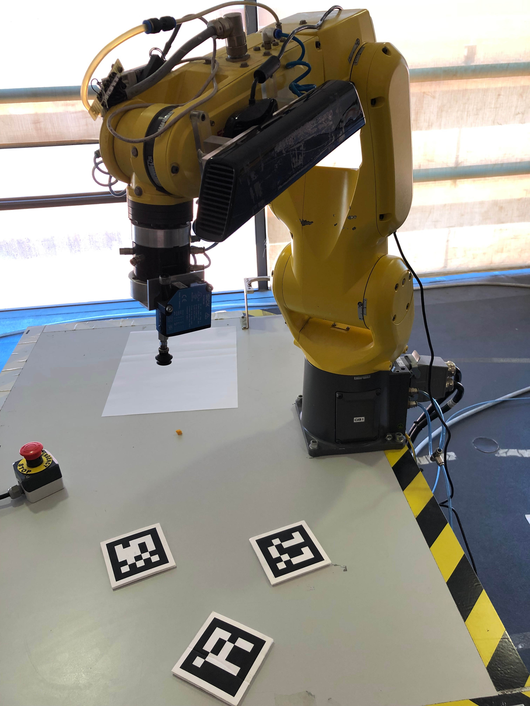
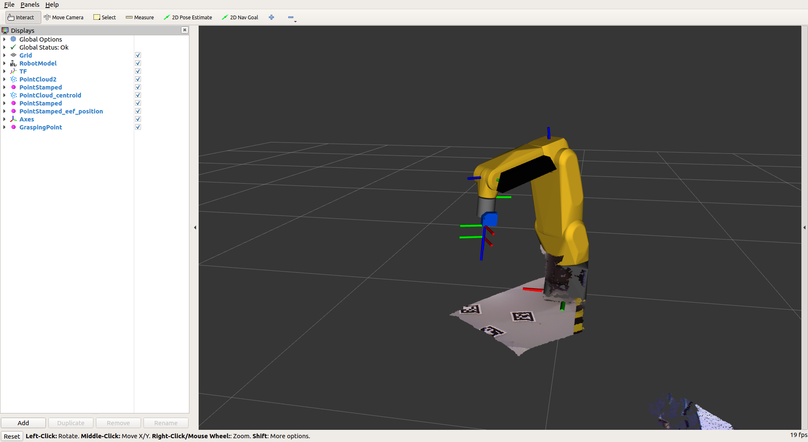

Iniciei esta semana com a correção dos bugs constatados na semana anterior, maioritariamente no modo automatico. Para o efeito, foi necessário a realização de alguns tutorias para melhor perceção do pacote usado na navegação automatica.
Após este desafio estar concluído, passei então, para a compreensão e configuração do manipulador Fanuc para bin-picking.
Comecei por tentar perceber a metodologia usada pela Joana Mota, e iniciei a instalação dos pacotes necessários para o uso da kinect, manipulador Fanuc, bem como os pacotes necessários para a calibração da camara. Depois de montar o hardware, foi possivel obter a sua vizualização em rviz:


Devido às dificuldades inerentes à compreensão de alguns conceitos, necessito de realizar alguns tutoriais de modo a compreender melhor alguns conceitos fundamentais, tais como tf’s, Unified Robot Description Format (URDF) , e posteriormente do moveit.
De modo a facilitar trabalhos futuros e a utilização do presente código, atualizei o repositorio do GitHub e consequentemente o ficheiro Readme com todas as tarefas necessárias ao setup, bem como a solução de todos os erros encontrados durante o procedimento. Pode-se pre-visualizar o ficheiro em : https://github.com/TiagoaTavares/Robonuc.